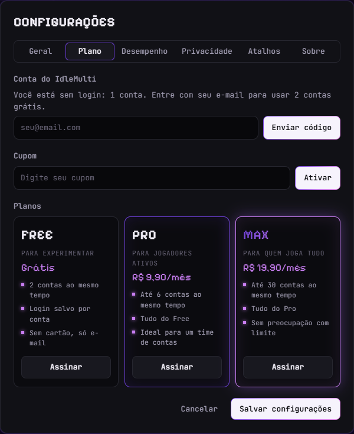
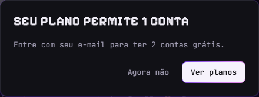

Contas lado a lado
Veja todas na grade ou abra uma em foco. Atalhos Ctrl + 1 a 9 trocam de conta na hora.
O IdleMulti abre várias contas do mesmo jogo idle lado a lado. Cada conta tem o próprio login, e você controla quanta memória e CPU cada uma pode gastar.
Windows 10 e 11. Grátis para 2 contas, sem cartão.
Um painel por conta, todos na mesma tela. Quando uma conta não precisa rodar, você suspende e ela deixa de gastar memória, sem perder o login.
Não usa memória nem CPU. O login continua salvo.


Veja todas na grade ou abra uma em foco. Atalhos Ctrl + 1 a 9 trocam de conta na hora.
Cada conta guarda os próprios cookies, separados das outras. Você entra uma vez e o login fica salvo neste computador.
Defina limite de memória e de CPU por conta, suspenda as que não está usando e libere memória com um clique.
O app não vê nem guarda a senha do seu jogo. Câmera, microfone, localização e downloads ficam bloqueados nas páginas dos jogos.
Bloqueia scripts de anúncios e rastreadores comuns que os jogos carregam, o que poupa tráfego e memória.
Quando sai uma versão nova, o IdleMulti avisa e você atualiza com um clique, sem baixar o instalador de novo.
Comece grátis e assine dentro do app quando precisar de mais contas. O pagamento é por Pix e a assinatura é mensal.
Grátis
R$ 9,90/mês
R$ 19,90/mês
A assinatura é feita dentro do app, depois de entrar com o seu e-mail. Os planos pagos usam uma conta por vez em cada computador.
Funciona com jogos que rodam no navegador. Você cola o endereço do jogo nas configurações e todas as contas abrem nele.
Sem login você usa 1 conta. Entrando com seu e-mail (você recebe um código, sem senha) liberam-se as 2 contas grátis.
Pode instalar em quantos quiser e entrar com o mesmo e-mail, mas os planos pagos funcionam em um computador por vez. Ao entrar em outro, o anterior volta para o limite do Free, sem perder nenhum login.
A assinatura vale até o fim do período pago. Depois, as contas acima do limite ficam suspensas e travadas. Nada é apagado e o login de cada uma continua salvo.
O instalador ainda não tem assinatura digital paga, então o Windows pode pedir confirmação na primeira vez. Escolha “Mais informações” e depois “Executar assim mesmo”.
Instale, cole o endereço do jogo e adicione as contas. Leva menos de um minuto.
Baixar para Windows